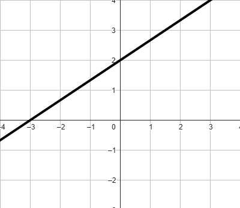
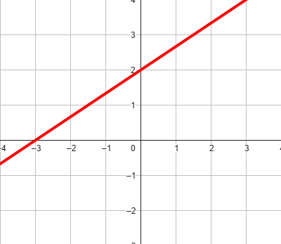
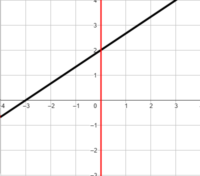
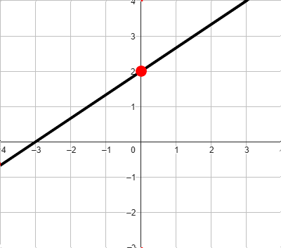
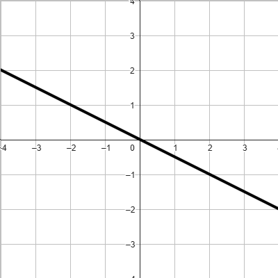
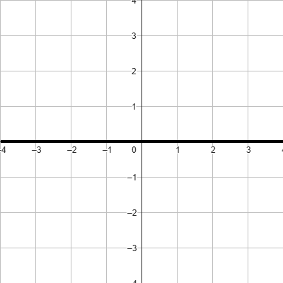
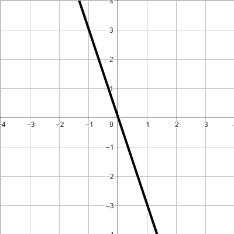
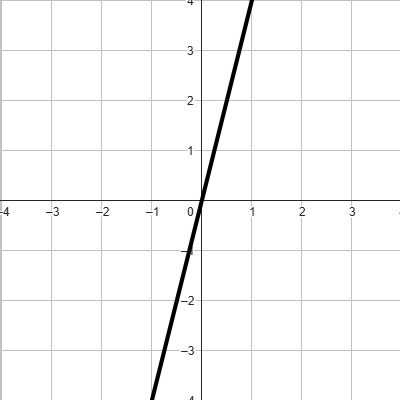
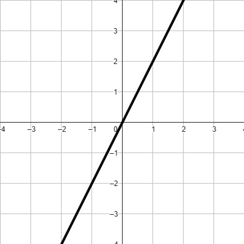

Consideriamo i punti
\[
A\left(0\,;\,\,8\right) \qquad B\left(1\,;\,\,12\right)
\]
\[
C\left(2\,;\,\,-17\right) \qquad D\left(-3\,;\,\,-8\right)
\]
Stabilire quali tra di essi soddisfano l'equazione
\[
y = 5x + 7
\]
Esercizio guida
Stabilire il termine noto della retta rappresentata in figura.

Stabilire il termine noto della retta rappresentata in figura.
Guardiamo il punto di intersezione tra la retta assegnata e l'asse delle \(y\).
Stabilire il termine noto della retta rappresentata in figura.

Guardiamo il punto di intersezione tra la retta assegnata e l'asse delle \(y\).
Stabilire il termine noto della retta rappresentata in figura.

Guardiamo il punto di intersezione tra la retta assegnata e l'asse delle \(y\).
Stabilire il termine noto della retta rappresentata in figura.

Guardiamo il punto di intersezione tra la retta assegnata e l'asse delle \(y\).
Stabilire il termine noto della retta rappresentata in figura.
Guardiamo il punto di intersezione tra la retta assegnata e l'asse delle \(y\).
Tale punto ha coordinate \((0\,;\,\,2)\).
Stabilire il termine noto della retta rappresentata in figura.
Guardiamo il punto di intersezione tra la retta assegnata e l'asse delle \(y\).
Tale punto ha coordinate \((0\,;\,\,2)\).
Questo implica che il termine noto è \(2\).
Esercizio 3
Di seguito sono riportare cinque equazioni e cinque rette.
Associare ciascuna equazione alla retta che rappresenta.
Equazione 1
\[
y = 2x
\]
Grafico 1 
Equazione 2
\[
y = 4x
\]
Grafico 2
Equazione 3
\[
y = -3x
\]
Grafico 3
Equazione 4
\[
y = 0x
\]
Grafico 4
Equazione 5
\[
y = -\dfrac{1}{2}x
\]
Grafico 5
Suggerimento:
Per risolvere l'esercizio ricordate che il coefficiente angolare della retta è legato
alla sua pendenza. Se necessario provate a consultate nuovamente le dispense.